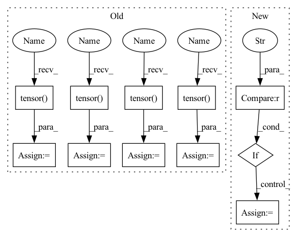

Pattern ID :2277

Before Change
valid_att_mask, valid_label = self.get_input_data(self.valid_set)
// Convert all train inputs and labels into torch tensors
train_inputs = torch.tensor(train_input)
train_type_ids = torch.tensor(train_type_id)
train_masks = torch.tensor(train_att_mask)
train_labels = torch.tensor(train_label)
// Create the DataLoader for our training set.
train_data = TensorDataset(train_inputs, train_type_ids, train_masks, \
train_labels)
After Change
// Create the DataLoader for our training set.
data = TensorDataset(input_ids, token_type_ids, att_masks, labels)
if type == "train":
sampler = RandomSampler(data)
else:
sampler = SequentialSampler(data)
dataloader = DataLoader(data, sampler=sampler, batch_size=self.batch_size)
return dataloader
In pattern: SUPERPATTERN
Frequency: 3
Non-data size: 11
Instances
Fragment ID: 9693331
Project Name: yuanbit/finbert-qa
Commit Name: a4844511b0075db8aaf855486bb22046ba74669c
Time: 2020-04-11
Author: bithiahy@gmail.com
File Name: src/finbert_qa.py
M Class Name: PointwiseBERT
N Class Name: PointwiseBERT
M Method Name: get_dataloader(3)
N Method Name: get_dataloader(1)
M Parent Class:
N Parent Class:
M File Name: src/finbert_qa.py
N File Name: src/finbert_qa.py
M Start Line: 176
M End Line: 224
N Start Line: 150
N End Line: 182
'>
Before Change
assert pos.shape == (z.shape[0], 3)
assert conf["formation_energy"].attrs["units"] == "eV"
y = pt.tensor(conf["formation_energy"][()], dtype=pt.float64)
assert y.shape == ()
assert conf["forces"].attrs["units"] == "eV/Å"
dy = -pt.tensor(conf["forces"], dtype=pt.float32)
assert dy.shape == pos.shape
assert conf["partial_charges"].attrs["units"] == "e"
pq = pt.tensor(conf["partial_charges"], dtype=pt.float32)
assert pq.shape == z.shape
assert conf["dipole_moment"].attrs["units"] == "e*Å"
dp = pt.tensor(conf["dipole_moment"], dtype=pt.float32)
assert dp.shape == (3,)
// Skip samples with large forces
if self.max_gradient:
After Change
mols = None
load_confs = None
if version == "1.0":
assert "name" in h5.attrs
mols = h5.items()
load_confs = self._load_confs_1_0
elif version == "2.0":
assert len(h5.keys()) == 1
mols = list(h5.values())[0].items()
'>
Fragment ID: 9691282
Project Name: torchmd/torchmd-net
Commit Name: d23e6500f2cef1fa56d6c99ce5fdb983f1379bca
Time: 2022-10-28
Author: peastman@stanford.edu
File Name: torchmdnet/datasets/ace.py
M Class Name: Ace
N Class Name: Ace
M Method Name: sample_iter(2)
N Method Name: sample_iter(1)
M Parent Class: Dataset
N Parent Class: Dataset
M File Name: torchmdnet/datasets/ace.py
N File Name: torchmdnet/datasets/ace.py
M Start Line: 72
M End Line: 123
N Start Line: 144
N End Line: 206
'>
Before Change
valid_att_mask, valid_label = self.get_input_data(self.valid_set)
// Convert all train inputs and labels into torch tensors
train_inputs = torch.tensor(train_input)
train_type_ids = torch.tensor(train_type_id)
train_masks = torch.tensor(train_att_mask)
train_labels = torch.tensor(train_label)
// Create the DataLoader for our training set.
train_data = TensorDataset(train_inputs, train_type_ids, train_masks, \
train_labels)
After Change
// Create the DataLoader for our training set.
data = TensorDataset(input_ids, token_type_ids, att_masks, labels)
if type == "train":
sampler = RandomSampler(data)
else:
sampler = SequentialSampler(data)
dataloader = DataLoader(data, sampler=sampler, batch_size=self.batch_size)
return dataloader
'>
Fragment ID: 9691184
Project Name: yuanbit/finbert-qa
Commit Name: a4844511b0075db8aaf855486bb22046ba74669c
Time: 2020-04-11
Author: bithiahy@gmail.com
File Name: src/finbert_qa.py
M Class Name: PointwiseBERT
N Class Name: PointwiseBERT
M Method Name: get_dataloader(3)
N Method Name: get_dataloader(1)
M Parent Class:
N Parent Class:
M File Name: src/finbert_qa.py
N File Name: src/finbert_qa.py
M Start Line: 176
M End Line: 224
N Start Line: 150
N End Line: 182
'>
Before Change
assert pos.shape == (z.shape[0], 3)
assert conf["formation_energy"].attrs["units"] == "eV"
y = pt.tensor(conf["formation_energy"][()], dtype=pt.float64)
assert y.shape == ()
assert conf["forces"].attrs["units"] == "eV/Å"
neg_dy = pt.tensor(conf["forces"][...], dtype=pt.float32)
assert neg_dy.shape == pos.shape
assert conf["partial_charges"].attrs["units"] == "e"
pq = pt.tensor(conf["partial_charges"][:], dtype=pt.float32)
assert pq.shape == z.shape
assert conf["dipole_moment"].attrs["units"] == "e*Å"
dp = pt.tensor(conf["dipole_moment"][:], dtype=pt.float32)
assert dp.shape == (3,)
// Skip samples with large forces
if self.max_gradient:
After Change
version = h5.attrs["layout_version"]
mols = None
if version == "1.0":
assert "name" in h5.attrs
mols = h5.items()
elif version == "2.0":
assert len(h5.keys()) == 0
mols = list(h5.values())[0].items()
else:
raise RuntimeError(f"Unsuported layout verions: {version}")
'>
Fragment ID: 9693335
Project Name: torchmd/torchmd-net
Commit Name: fdbbd9d91ea0ec8e8a0ea2ec63be8b8bd2e4cb61
Time: 2022-10-17
Author: r.galvelis@acellera.com
File Name: torchmdnet/datasets/ace.py
M Class Name: Ace
N Class Name: Ace
M Method Name: sample_iter(2)
N Method Name: sample_iter(2)
M Parent Class: Dataset
N Parent Class: Dataset
M File Name: torchmdnet/datasets/ace.py
N File Name: torchmdnet/datasets/ace.py
M Start Line: 81
M End Line: 125
N Start Line: 110
N End Line: 140